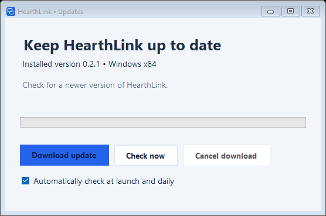

HearthLink for Windows
Make yourself
at home.
Install HearthLink on both PCs to get started.
Keep both computers signed in and unlocked.

HearthLink
Windows 11 Home & Pro · 64-bit installer
Checking for the latest release…
Before you install
- Both PCs need an internet connection; they can be on different networks.
- Install the latest version on both computers.
- Direct network connections are optional; allow them only on a trusted Private network.
- Compare the pairing identities before approving access.
What to expect
The current build supports attended screen sharing, keyboard and mouse control, switching between displays, and copying files both ways during a control session. The remote PC must approve each session.
Clipboard sync, unattended access, and remote restart are still being developed. Performance varies; two-PC acceptance testing is ongoing.
The installer is currently unsigned. Windows may show an unknown-publisher notice. Download only from the official release page and compare the published checksum.
Read the illustrated dashboard and pairing manual (0.1.1 PDF)
A few practical details
Will it work with Windows 11 Home?
Yes. HearthLink uses its own desktop sharing connection and does not require the Windows Pro Remote Desktop host.
Can I connect across the internet?
Yes. From version 0.3.0, paired PCs connect from any network through the encrypted HearthLink relay. The connection is end-to-end encrypted between your two PCs, so the relay cannot see your screen or input. No router setup or open ports are needed.
How do updates work?
In version 0.2.1 and later, open App updates to check GitHub Releases. Automatic checks can notify you when a newer installer is available. Downloading and installation remain your choice. Existing 0.2.0 installations need the first update-enabled installer installed manually.

The connection won’t open. What should I check?
Keep HearthLink open on the remote PC with incoming sessions enabled, and check that it says “Online through relay” and that both PCs are on the internet. Make sure both PCs run version 0.3.0 or later. For direct connections on your own network, also turn on “Also accept direct connections on my network” and allow HearthLink’s TCP 45831 rule on a trusted Private network. Do not turn off your firewall.